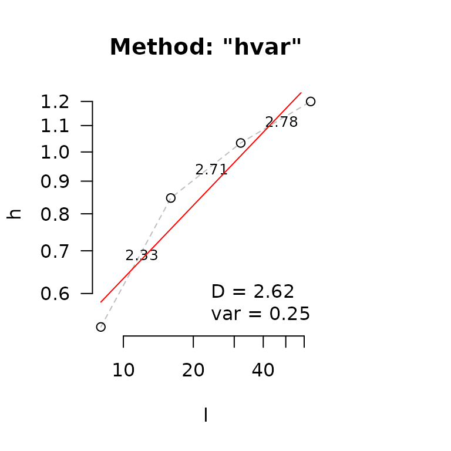
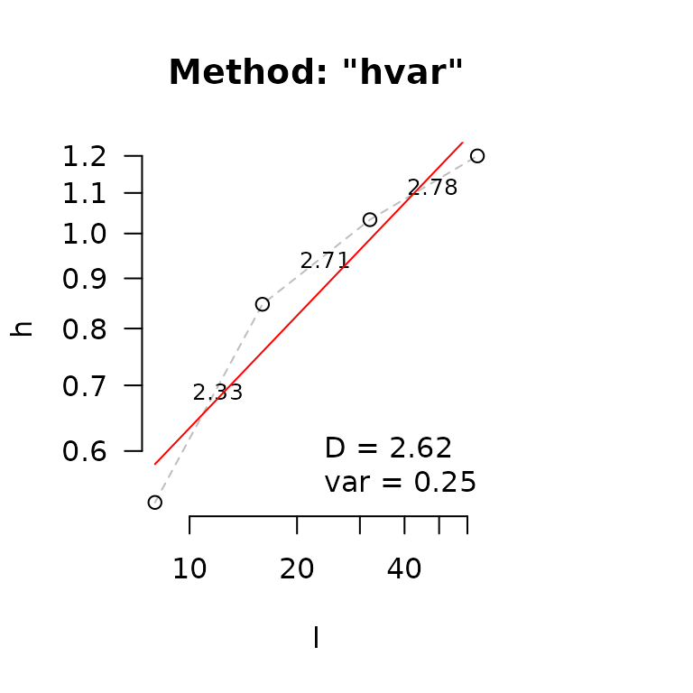
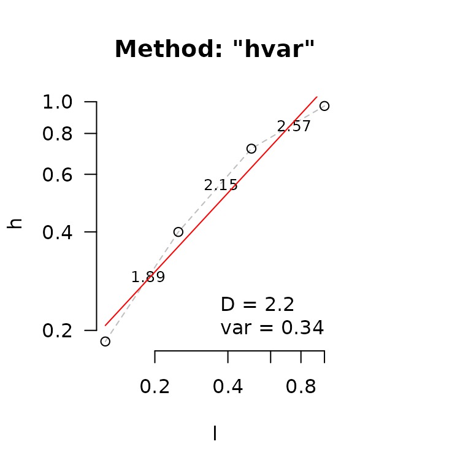

In this vignette, we give a brief overview of fractal dimension
methods in habtools. There are currently five methods
summarized in the table below. Each method has inherent biases and so
should be used cautiously and consistently. For example, some methods
are sensitive to particular elements, like outliers, axis-scaling or
drop-offs, where others are invariant to them.
| Method | Function | Data | Default lvec
|
Notes |
|---|---|---|---|---|
| Height variation | hvar |
RasterLayer | 2-10 x resolution to extent | Invariant to height. Sensitive to non-fractal edges and outliers. |
| Standard deviation | sd |
RasterLayer | 2-10 x resolution to extent | Invariant to height. Sensitive to non-fractal edges and outliers. |
| Area | area |
RasterLayer or mesh3d | 2-4 x resolution to 1/8 extent | Sensitive to height; approaches 2 for surfaces with low height variation, relative to the extent. Less sensitive to non-fractal anomalies. |
| Cube counting | cubes |
RasterLayer or mesh3d | 2-10 x resolution to extent | Sensitive to height; approaches 2 for for surfaces with low height variation, relative to the extent. More reliable for closed 3D object. Less sensitive to non-fractal anomalies. |
| Box counting | boxes |
xy data.frame | 2-10 x resolution to extent | For 2D shapes only. Less sensitive to non-fractal anomalies. |
Generally, fractal dimension is estimated by measuring values (e.g., counts of cubes, heights, areas) across a sequence of different resolutions or length scales, and then finding the slope between these scales and measured values.
The lvec
Selecting a sensible sequence of scales (i.e., the length vector
lvec) is critical and should be the same when comparing
surfaces and objects. The lvec should range between the
resolution and extent of the surface or mesh, or across a range of
scales relevant to the question being address. If you do not enter an
lvec, each function will estimate one for you based on some
rules of thumb for that particular method (see Table). For example,
hvar, sd, cubes and
boxes will generate a sequence from 2- to 10-times the
resolution to the extent on a log2-scale. area will
generate a sequence from 2 times the resolution to 1/8 the extent on the
log2-scale.
The area method has increased bias with increased values
inside lvec, because of the way surface area is calculated
at each scale (using Jenness, 2004). The method calculates surface area
of each cell by using the height of the cell and its 8 surrounding cells
to create a surface. For border cells, the cells outside of the DEM are
assumed to be of equal height as the border cells. This means that
border cells may have lower surface area estimates. If the ratio of
border cells to total cells inside a DEM is high, there may be an
underestimation of surface area, which is the case when values inside
lvec are too close to the extent. For example, if
lvec contains a scale of extent/2, all the cells are border
cells; if it contains extent/4, 75% of the cells are border cells. For
this reason, the area method may be better suited for
larger areas, relative to the lvec.
Below a fractal 128 x 128 terrain is simulated and fractal dimension
is estimated with the height variation method. Because no
lvec was provided, one was generated as
c(8, 16, 32, 64, 128).
# simulate fractal terrain
surf <- sim_dem(L = 64, smoothness = 0.5)
# fractal dimension using height variation method
fd(surf, method="hvar", plot = TRUE, diagnose = TRUE)
#> lvec is set to c(8, 16, 32, 64). 

#> $D
#> [1] 2.619107
#>
#> $data
#> l h
#> 1 8 0.5317516
#> 2 16 0.8469049
#> 3 32 1.0330240
#> 4 64 1.1999165
#>
#> $lvec
#> [1] 8 16 32 64
#>
#> $D_vec
#> [1] 2.328553 2.713398 2.783940
#>
#> $var
#> [1] 0.2451052
#>
#> $method
#> [1] "hvar"When plot=TRUE, a plot of the surface is generated with
red rectangles representing lvec to help visualize the
scales at which fractal dimension is estimated. When
diagnostic=TRUE, the relationship between scales and mean
surface heights is plotted. The red line in the best-fit line for all
point and dashed lines are for each pair-wise scale with localized D
estimates. For the height range method, D is 3 minus the slope. The
diagnostic plot helps identify scales that are problematic (typically
the extremes of lvec), which then have bias the estimate.
The lvec is returned and can then be altered, entered
explicitly, and fractal dimension estimated again.
hvar and sd methods are not sensitive to
z-axis scaling, whereas area and cubes methods
are. Here are estimates for the relative flat surface we simulated with
smoothness=0.5.
# height variation
fd(surf, method = "hvar")
#> lvec is set to c(8, 16, 32, 64).
#> [1] 2.619107
# standard deviation
fd(surf, method = "sd")
#> lvec is set to c(8, 16, 32, 64).
#> [1] 2.731669
# area
fd(surf, method = "area")
#> lvec is set to c(2, 4, 8).
#> [1] 2.00165
# cube counting
fd(surf, method = "cubes")
#> lvec is set to c(2, 4, 8, 16, 32, 64).
#> [1] 2hvar and sd estimates are in the vicinity
of D=2.5. However, area and cubes methods
result in estimates close to 2: a flat surface. If we transform the
z-scale to match the extent (L=128), we get the following.
surf_z <- surf
values(surf_z) <- values(surf_z) * ((64-1) / hr(surf_z))
hr(surf_z)
#> [1] 63
# height variation
fd(surf_z, method = "hvar")
#> lvec is set to c(8, 16, 32, 64).
#> [1] 2.619107
# standard deviation
fd(surf_z, method = "sd")
#> lvec is set to c(8, 16, 32, 64).
#> [1] 2.731669
# area
fd(surf_z, method = "area")
#> lvec is set to c(2, 4, 8).
#> [1] 2.543829
# cube counting
fd(surf_z, method = "cubes")
#> lvec is set to c(2, 4, 8, 16, 32, 64).
#> [1] 2.375619hvar and sd estimates are identical (i.e.,
invariant to z-scaling) and area and cubes
estimates are higher. This dichotomy raises an underlying philosophical
question about fractal surfaces: does the fractal dimension of an
surface change if it is transformed along a dimension?
The answer will likely depend on what you are analyzing. For example,
if you are examining landscapes, then area and
cubes methods will not be much use as they will tend to D=2
when surfaces a low relative to wide. Whereas, if you are examining
surfaces that are as high as they are wide, then the area
and cubes methods might be a better choice. If you are
examining a closed 3D objects (i.e., watertight), then the
cubes method is preferable as the 3D analogue to box
counting on closed shapes like the coastline of the UK.
# cube counting
fd(mcap, method = "cubes", plot=TRUE, diagnose=TRUE)
#> lvec is set to c(0.012, 0.024, 0.049, 0.097, 0.194, 0.389).
#> $D
#> [1] 2.162501
#>
#> $data
#> l n
#> 6 0.01214766 1995
#> 5 0.02429533 596
#> 4 0.04859066 149
#> 3 0.09718131 32
#> 2 0.19436262 8
#> 1 0.38872525 1
#>
#> $lvec
#> [1] 0.38872525 0.19436262 0.09718131 0.04859066 0.02429533 0.01214766
#>
#> $D_vec
#> [1] 1.743005 2.000000 2.219169 2.000000 3.000000
#>
#> $var
#> [1] 0.4819041
#>
#> $method
#> [1] "cubes"Here is an example of 2D box counting for the planar projection of
the mcap mesh.
# project coral as xy coordinates
mcap_2d <- mesh_to_2d(mcap)
# box counting
fd(mcap_2d, method = "boxes", plot=TRUE, diagnose=TRUE)

#> $D
#> [1] 1.410651
#>
#> $data
#> l n
#> 6 0.01205958 137
#> 5 0.02411915 70
#> 4 0.04823830 31
#> 3 0.09647661 11
#> 2 0.19295322 4
#> 1 0.38590644 1
#>
#> $lvec
#> [1] 0.38590644 0.19295322 0.09647661 0.04823830 0.02411915 0.01205958
#>
#> $D_vec
#> [1] 0.9687491 1.1750867 1.4947647 1.4594316 2.0000000
#>
#> $var
#> [1] 0.3896004
#>
#> $method
#> [1] "boxes"Non-fractal surfaces
Natural surfaces often have anomalies such as peaks, troughs and
edges that can result in biased fractal dimension estimates. It is up to
the user to determine which method is best for their purposes, and to
demonstrate that a biological or ecological result is robust to the
choice of method. The function detect_drop() can help to
investigate if a DEM has a lot of overhangs or sudden drops. It returns
a raster where values mark the areas with sudden drops depending on a
given threshold (Default threshold = 0.1).
dem1 <- dem_crop(horseshoe, x0 = -470.8104, y0 = 1270.625, L = 2, plot = TRUE)
drop1 <- detect_drop(dem1, d = 0.1)
plot(drop1)
# This DEM does not have many drops
fd(dem1, method = "hvar", lvec = c(1, 0.5, 0.25, 0.125), diagnose=TRUE)
#> $D
#> [1] 2.35037
#>
#> $data
#> l h
#> 1 0.125 0.09603534
#> 2 0.250 0.16825392
#> 3 0.500 0.24666635
#> 4 1.000 0.37923605
#>
#> $lvec
#> [1] 0.125 0.250 0.500 1.000
#>
#> $D_vec
#> [1] 2.190997 2.448079 2.379465
#>
#> $var
#> [1] 0.1331159
#>
#> $method
#> [1] "hvar"
dem2 <- dem_crop(horseshoe, x0 = -466.8104, y0 = 1266.625, L = 2, plot = TRUE)
drop2 <- detect_drop(dem2, d = 0.1)
plot(drop2)
#> $D
#> [1] 2.198017
#>
#> $data
#> l h
#> 1 0.125 0.1849993
#> 2 0.250 0.3998837
#> 3 0.500 0.7186458
#> 4 1.000 0.9706139
#>
#> $lvec
#> [1] 0.125 0.250 0.500 1.000
#>
#> $D_vec
#> [1] 1.887939 2.154299 2.566383
#>
#> $var
#> [1] 0.3418205
#>
#> $method
#> [1] "hvar"In the example above, dem2 has much more and higher
drops compared to dem1. We can see its effect on the height
variation method by looking at the diagnostics plot. The dots in the
diagnostic plot for dem2 follow a curve, and do not fall on
a straight line. The variance of D in dem2 (var = 0.44) is
also larger than for dem1 (0.24). Moreover, the frequency
of drops correlates slightly negatively with the fractal dimension
estimates when using the hvar method. Therefore, caution
must be used with the interpretation of fractal dimension when the DEM
has many drops or overhangs. Changes in D depending on the scale is
common for non-fractal surfaces and therefore it is crucial to carefully
choose the lvec and keep it the same when comparing across
many surfaces.